23 July 2017 | 10 Tracks
Moonbug
Experimental Instrumentals, Sometimes without Instruments
Composed, performed, and produced by Gabriel Drozdov. "Nice" features tap dancing by Maddie Ulevich. Artwork designed by Maddie Ulevich and Gabriel Drozdov.
Back when I was writing Time Passes, I had grand ideas for interludes between the songs and that the album would therefore be one continuous piece of music. That obviously didn't happen, but I had already finished several of these interludes so I eventually decided to finish the rest of them off as best as I could. Moonbug therefore contains songs I spent various amounts of effort on, although all the tracks focus on ambient and experimental compositional techniques.
31 August 2016 | 28 Tracks
Falling in Love to Voices
Snippets of Light Little Pieces for Piano
Composed, performed, and produced by Gabriel Drozdov. Artwork drawn by Maddie Ulevich.
Once at Wesleyan University, I spent much less time songwriting since I became preoccupied with schoolwork and new interests (like theater!). Still, I would often play piano in the practice rooms, and I would record these small sessions on my phone or handheld recorder. Falling in Love to Voices is an assembly of these scattered thoughts, strung together as a sampling of songs that I never finished.
31 August 2016 | 9 Songs (+1 Bonus)
Time Passes
An Art Rock Re-make of To Home
Composed, performed, and produced by Gabriel Drozdov based on prior songs composed by Gabriel Drozdov. Artwork drawn by Gabriel Drozdov.
My first album To Home is long and unpolished and reflects a period of experimentation and discovery for me as a songwriter and producer. Many ideas from the album saw incomplete fruition due to my lack of experience, and I more recently wanted to see how I could adapt these tracks with newly acquainted skills. The bonus track on Time Passes reflects the extent to which I wanted to produce these tracks, but I underestimated the time committment this would take as well as my new responsibilities in college. Time Passes is therefore another incomplete album, just like To Home has always felt to me, but I can't work on this set of music any longer.
1 January 2015 | 2 Tracks
Dano
A Piece for String Quartet (or Four Synthesizers)
Composed, arranged, and produced by Gabriel Drozdov. Performed by hired string players (whose names I unfortunately do not know). Artwork is a photo of my late grandfather, Pyotr Drozdov.
I originally composed Dano as a piece for four synthesizers, mainly as a practice for writing in general SATB style for my composition class taught by Brian Landrus at Lagond Music School. I titled that piece "Turn Into Stone", named after Animal Collective's song "Turn into Something". My teacher wanted me to rearrange the composition so that performers could actually play it, so I edited the composition heavily until it reached its final form as "Dano", a string quartet piece named after Paul Dano (I had watched him in the 2007 film There Will Be Blood). I recorded that piece with an assembled string quartet at Lagond over the course of two years, and the finished track reflects that recording session. Thus, any mistakes in the performance are due to this time constraint.
18 December 2014 | 7 Tracks
Something Happens
Piano-Jazz Instrumentals for a Nonexistent Film
Composed, arranged, performed, and produced by Gabriel Drozdov. Artwork painted and designed by Gabriel Drozdov.
I originally composed the music for Something Happens as the soundtrack for a film adaptation I wanted to make of T.S. Eliot's "The Love Song of J. Alfred Prufrock". That adaptation never happened (I got halfway through several script drafts but lost interest in the project) and I instead decided to record and release my compositions as a pseudo-live album, since I wanted to have a live music jazz club in the film. I transcribed the sheet music for "Come Into The Room" after recording the track, since I wanted to submit the piece to colleges (and I think they liked it!).
View sheet music for "Come Into The Room". Listen to the album.
8 August 2014 | 10 Songs
Granola
By "Lola", created at NYU
Written, performed, and produced by Gabriel Drozdov. "Dirk Diggler" improvised and performed by Will Adler. "Empty Bowl" performed by Gabriel Drozdov and a NYC street drummer. "The Outsider" produced by Joaquin Friedman. Artwork designed by Gabriel Drozdov. Granola saw a limited physical release as a double album printed and distributed by Gabriel Drozdov (around ten copies were produced).
I made Granola with three other students at NYU's Clive Davis Institute for Recorded Music summer high school program. I composed and performed all of the tracks, trying to make pop-y music (which was not easy for me to do at the time!). I would often write several songs the night before a recording session, but several songs like "Temporary Bride" stand out as much more narrative than most of my independent music.
 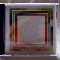Granola as I did for To Home, but I still wanted to create a tangible thing to show that I made a new album.">
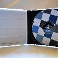
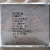Granola. I used the same font on all advertising for the group and album. I also used this random head figure I created (which you can barely see laid out four times in this photo. It was modeled after Dave Longstreth). I chose a paper motif for the album's aesthetic, since it resembled the idiosyncrasy and simplicity of the group and album.">
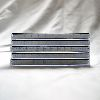
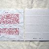
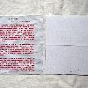
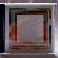Granola as I did for To Home, but I still wanted to create a tangible thing to show that I made a new album.">
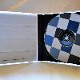
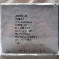Granola. I used the same font on all advertising for the group and album. I also used this random head figure I created (which you can barely see laid out four times in this photo. It was modeled after Dave Longstreth). I chose a paper motif for the album's aesthetic, since it resembled the idiosyncrasy and simplicity of the group and album.">
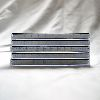
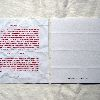
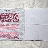
2014 | 9 Songs
Finnegan, Work in Progress
An Unreleased Album
Written by Gabriel Drozdov.
I took so long to record and produce my first album To Home that I wrote Finnegan, Work in Progress, an entire new album, during this period. Unlike To Home, Finnegan represents a much faster compositional process for me, since the former album took five years to plan, write, record, and produce, while the latter album took about a month. The album and several of its songs and lyrics are references to James Joyce novels, particularly Ulysses and Finnegans Wake. The title of the album comes from the working title for Finnegans Wake, which was just "Work in Progress".
19 May 2014 | 22 Songs
To Home
A Five-Part Concept Album, and an EP
Written, performed, and produced by Gabriel Drozdov. Artwork painted by Gabriel Drozdov. To Home saw a limited physical release as a double album printed and distributed by Gabriel Drozdov (around fifty copies were produced).
Conceived over the course of five years, To Home is a vague concept album about a breakup between some people named Mason and Erin. The album is long, convoluted, shallow, and features five parts centralized on different themes. The album's final part "More" is an EP that features songs about excess, since I couldn't stop writing music while I was recording the other five parts.